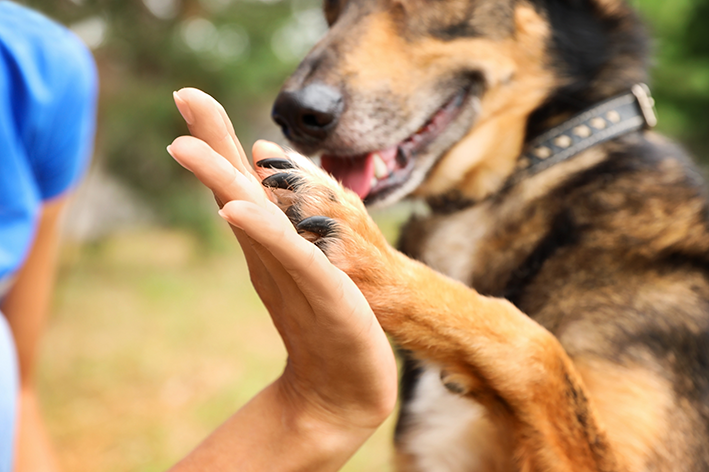

Você pode oferecer sua casa como lar temporário de animais. Outra maneira de ajudar é por meio do apadrinhamento de animais em abrigos. Divulgue em suas redes sociais casos de animais abandonados para ajudá-los a encontrar um novo lar. Você pode ajudar a promover a castração de gatos e cachorros de rua. Castrá-los é uma das melhores formas de reduzir o número de animais de rua. Seja um voluntário ou voluntária em ONGs de animais. Faça doações para abrigos e associações protetoras de animais Denuncie maus tratos e abandono de animais. Você pode procurar delegacias ou também entrar em contato com o Ibama, o Instituto Brasileiro do Meio Ambiente e dos Recursos Naturais Renováveis. Os contatos do Ibama estão na página do fale com o Ibama. Agora que você já sabe como lidar com o abandono de animais para mudar essa triste realidade, não deixe de conferir o vídeo a seguir sobre como cuidar de um gato filhote:
